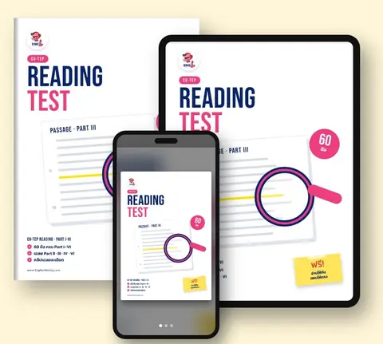

Free! Exam

เหลืออีก1000สิทธิ์
Free!
CU-TEP Reading Test
ข้อสอบ Reading 60 ข้อ ครบ Part I–VI พร้อมคลิปเฉลย
60 ข้อ · คลิปเฉลย
รับ PDF ข้อสอบทางอีเมลหรือทำออนไลน์ที่ test.englishmeup.com รู้ผลทันที
ข้อสอบ Reading 60 ข้อ ครบ Part I–VI พร้อมคลิปเฉลย
60 ข้อ · คลิปเฉลย
รับ PDF ข้อสอบทางอีเมลหรือทำออนไลน์ที่ test.englishmeup.com รู้ผลทันทีกรอกอีเมล แล้วกดยืนยันในอีเมลที่เราส่งไป · ระบบจะส่งไฟล์ PDF ข้อสอบให้ทันที (พิมพ์ออกมาทำได้)
หรือทำออนไลน์ที่ test.englishmeup.com รู้ผลทันที